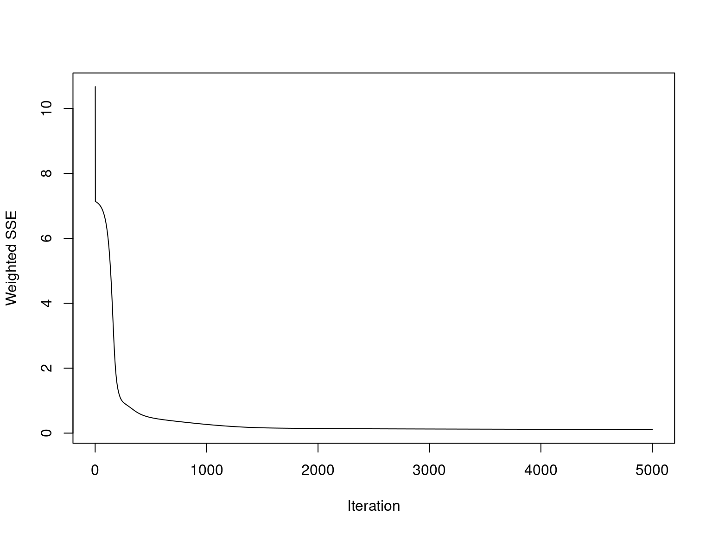
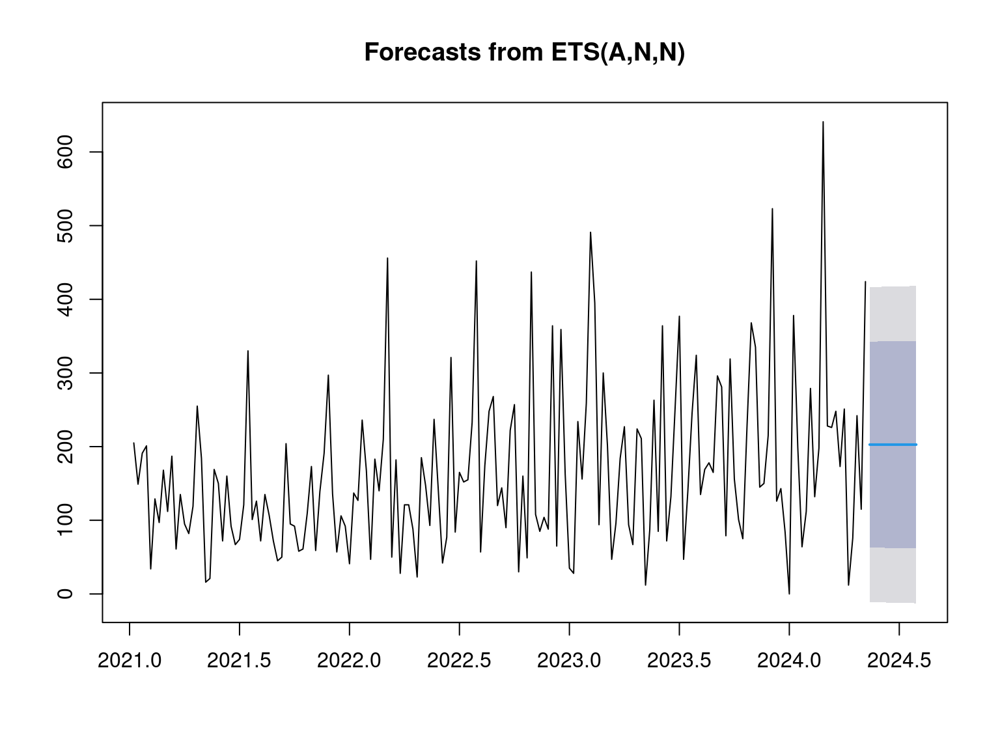
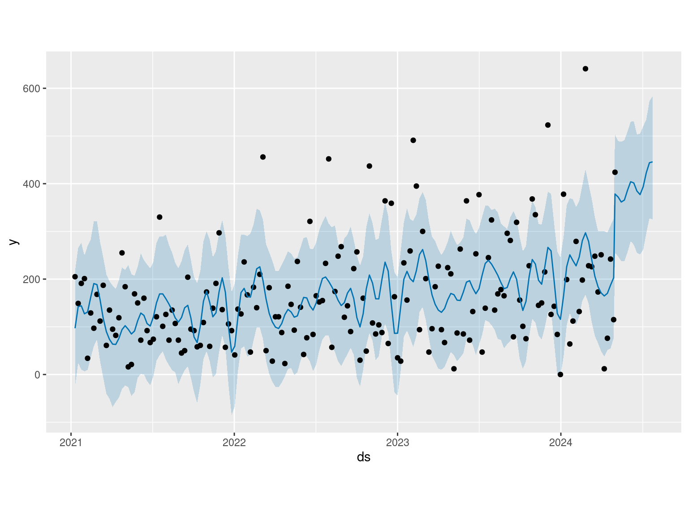
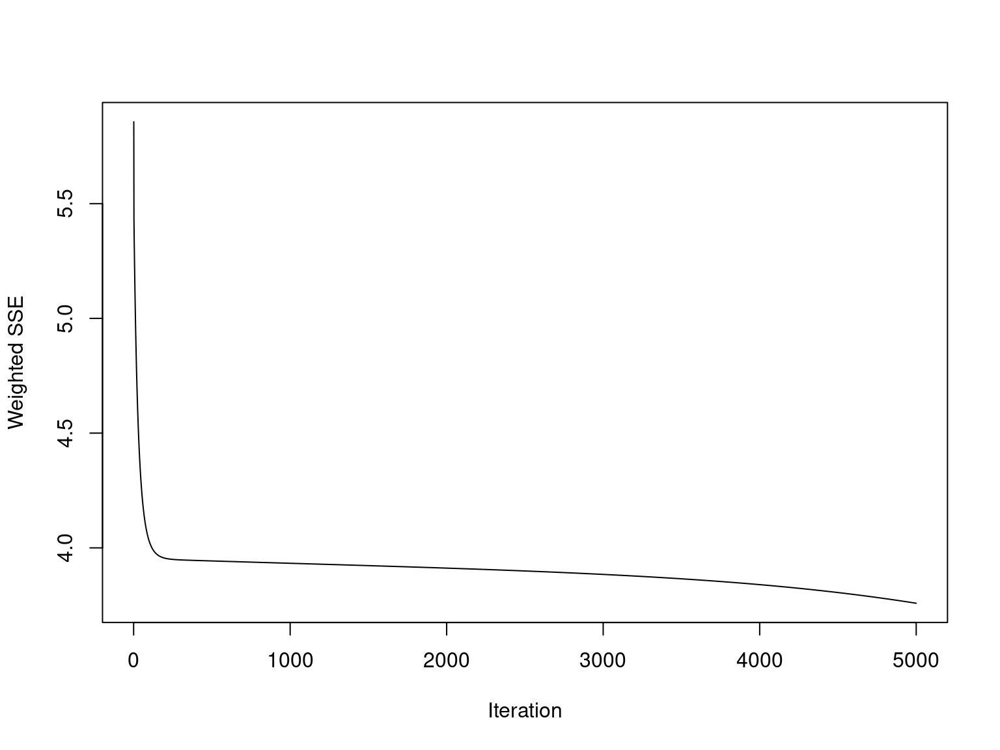
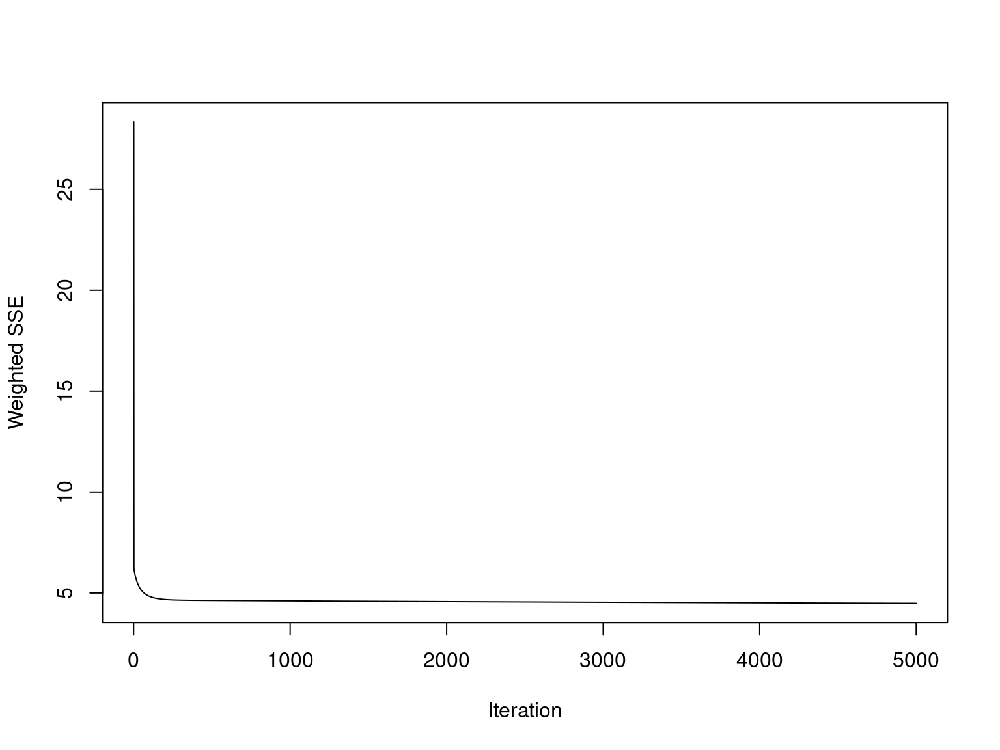
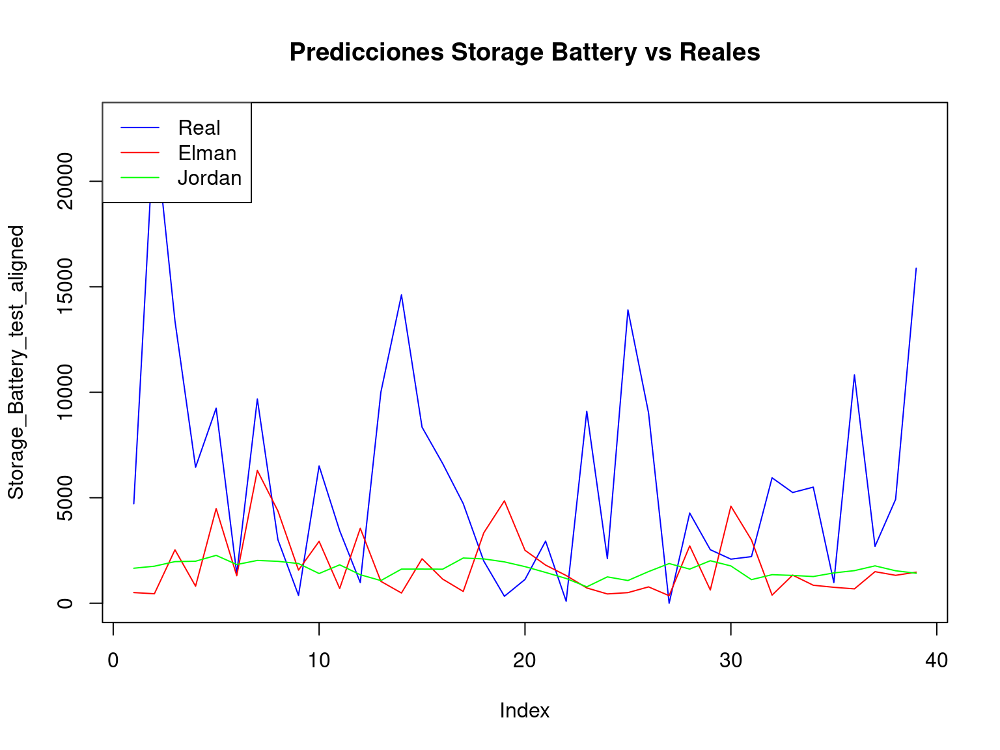

Actividad 3 - Preprocesamiento y visualización
3.1 Estacionariedad de las series de tiempo
Para comprobar si las series presentan estacionariedad se aplicará el test de Dickey-Fuller Aumentado (ADF), en el cual se plantea la hipótesis nula donde la serie de tiempo tiene una raíz unitaria, lo que implica que la serie no es estacionaria. La hipótesis alterna sugiere que la serie es estacionaria.
El valor p será la clave para escoger la hipótesis, si el valor p es menor a un nivel de significancia de 0.05 entonces rechazamos la hipótesis nula y podemos concluir qué la serie es estacionaria.
Podemos observar que en las 4 categorias el test Dickey-Fuller, arroja un p-value menor a 0.05, lo que nos confirma la estacionariedad de los datos.
3.1.1 AVR
# Perform the Augmented Dickey-Fuller test
adf_AVR <- adf.test(AVR_ts)
# Print the results
print(adf_AVR)
Augmented Dickey-Fuller Test
data: AVR_ts
Dickey-Fuller = -5.3614, Lag order = 5, p-value = 0.01
alternative hypothesis: stationaryLa base de datos AVR presenta estacionariedad.
# Perform the Augmented Dickey-Fuller test
adf_Line_UPS <- adf.test(Line_UPS_ts)
# Print the results
print(adf_Line_UPS)
Augmented Dickey-Fuller Test
data: Line_UPS_ts
Dickey-Fuller = -4.8432, Lag order = 5, p-value = 0.01
alternative hypothesis: stationaryLa base de datos Line UPS presenta estacionariedad.
# Perform the Augmented Dickey-Fuller test
adf_Online_UPS <- adf.test(Online_UPS_ts)
# Print the results
print(adf_Online_UPS)
Augmented Dickey-Fuller Test
data: Online_UPS_ts
Dickey-Fuller = -6.2101, Lag order = 5, p-value = 0.01
alternative hypothesis: stationaryLa base de datos Online UPS presenta estacionariedad.
# Perform the Augmented Dickey-Fuller test
adf_Storage_Battery <- adf.test(Storage_Battery_ts)
# Print the results
print(adf_Storage_Battery)
Augmented Dickey-Fuller Test
data: Storage_Battery_ts
Dickey-Fuller = -5.3686, Lag order = 5, p-value = 0.01
alternative hypothesis: stationaryLa base de datos Storage Battery presenta estacionariedad.
3.2 Funciones ACF (Funcion de Autocorrelacion) y PACF ( Funcion de Autocorrelacion Parcial)
###Análisis de la Categoría AVR


La mayoría de las autocorrelaciones están cerca de cero, y no parece haber un patrón claro. Esto sugiere que la serie podría ser estacionaria, con poca dependencia en los lags pasados.
En la grafica de PACF no hay un corte claro en los primeros lags ni un patrón significativo de correlaciones altas.
La serie AVR parece ser estacionaria y con poca dependencia en sus lags, por lo que modelos simples como un modelo ARMA podrían ser apropiados.


La grafica ACF no muestra un patrón claro, con la mayoría de las correlaciones cerca de cero. Esto también sugiere que la serie es estacionaria.
En la grafica PACF no se observa un corte significativo ni un patrón dominante en los primeros lags.
Dado que no hay señales de dependencia fuerte en los lags, la serie parece estacionaria y no se requeriría un modelo complejo. Se podría considerar un modelo ARIMA simple o incluso un modelo sin componentes autoregresivos o de media móvil.
3.2.1 Análisis de la Categoría Online UPS


La grafica de ACF muestra autocorrelaciones en algunos lags, aunque en general la mayoría están dentro de los límites de significancia.
La grafica de PACF similar a la ACF, con algunas correlaciones en los primeros lags pero sin un patrón de corte claro.
Este patrón podría indicar que se necesita un modelo simple, como ARIMA con un componente AR o MA de bajo orden. La serie parece estacionaria, pero un análisis adicional podría confirmar la falta de tendencia o estacionariedad.
3.2.2 Análisis de la Categoría Storage Battery


La grafica ACF muestra un decaimiento gradual, lo cual podría ser indicativo de una serie no estacionaria. Este patrón es característico de una serie con una tendencia subyacente.
En la grafica PACF se observa un corte más claro en los primeros lags, lo que sugiere que un modelo autoregresivo (AR) podría capturar parte de la dependencia en los datos.
Dado el patrón de decaimiento en la ACF y el corte en la PACF, un modelo ARIMA sería adecuado para esta serie, posiblemente con un componente autoregresivo (AR) y un grado de diferenciación (d = 1) para hacer la serie estacionaria. Un modelo ARIMA(1,1,0) podría ser una buena opción inicial para esta serie.
3.3 Descomposición aditiva
Componente observada (observed): Esta es la serie de tiempo original. Muestra el comportamiento general de los datos a lo largo del tiempo, incluyendo las fluctuaciones, tendencias y patrones estacionales.
Componente de tendencia (trend): Aquí se muestra la tendencia a largo plazo de la serie de tiempo. Representa la dirección general de la serie (si está aumentando, disminuyendo o permaneciendo relativamente constante).
Componente estacional (seasonal): Este componente captura los patrones repetitivos o cíclicos que se presentan en intervalos regulares, como los que podrían ocurrir debido a fenómenos estacionales (por ejemplo, aumentos en ventas por estaciones del año).
Componente aleatorio o residual (random): Representa la parte no explicada por la tendencia o los patrones estacionales, es decir, las fluctuaciones aleatorias o ruido.
¿Qué significa que sea una descomposición aditiva?
En una descomposición aditiva, los valores observados de la serie de tiempo se descomponen como la suma de los tres componentes: tendencia, estacionariedad y componente aleatorio. Es decir:
\[ Observado=Tendencia+Estacionalidad+ComponenteAleatorio \] ### Descomposición Aditiva AVR
# Descomposición aditiva
descomposicion_aditiva_AVR <- decompose(AVR_ts)
# Graficar los componentes
autoplot(descomposicion_aditiva_AVR)
En la gráfica de la tendencia se puedes ver que hay una caída en la tendencia alrededor de 2022, seguida de una recuperación en 2023.
En la gráfica de la estacionalidad se puede observar que los picos y valles se repiten en intervalos regulares.
El componente aleatorio no presenta algun patron evidente, esto sugiere que el modelo de descomposición ha capturado adecuadamente la tendencia y la estacionariedad de la serie.
Esta descomposición muestra que la serie temporal está dominada por una componente estacional fuerte y una tendencia cambiante. El componente residual es relativamente pequeño en comparación con la magnitud de los picos en los datos, lo que sugiere que la mayor parte de la variabilidad ha sido capturada por los componentes de tendencia y estacionalidad.
3.3.1 Descomposición Aditiva Line UPS
# Descomposición aditiva
descomposicion_aditiva_Line_UPS <- decompose(Line_UPS_ts)
# Graficar los componentes
autoplot(descomposicion_aditiva_Line_UPS)
En la serie se observa una tendencia a lo largo de los años y un comportamiento de picos y valles que podrían estar asociados a factores estacionales.
La tendencia parece mostrar un descenso gradual al principio, seguido de una recuperación leve en 2023 y una estabilización hacia 2024.
El componente estacional es bastante pronunciado y constante a lo largo del tiempo, lo cual sugiere que existe un patrón repetitivo en intervalos regulares.
El componente de residuales muestra variaciones que no fueron explicadas por la tendencia ni por la estacionalidad. Aunque algunos picos en los residuales son notables, en general, parecen estar distribuidos aleatoriamente, lo cual es una buena señal. Los residuales no presentan patrones fuertes ni sistemáticos, lo que sugiere que la descomposición capturó adecuadamente la estructura de la serie temporal.
3.3.2 Descomposición Aditiva Online UPS
# Descomposición aditiva
descomposicion_aditiva_Online_UPS <- decompose(Online_UPS_ts)
# Graficar los componentes
autoplot(descomposicion_aditiva_Online_UPS)
La magnitud de los valores varía, pero no de forma significativa en amplitud, lo que hace que una descomposición aditiva sea razonable para esta serie.
La tendencia muestra un incremento gradual a lo largo del tiempo, lo que indica un crecimiento sostenido en el valor promedio de la serie. Esta podría representar un cambio a largo plazo en el fenómeno observado.
El componente estacional tiene una forma bastante estable y muestra un patrón repetitivo en intervalos regulares, indicando una estacionalidad clara y predecible.
Los residuales son relativamente pequeños y están distribuidos de manera aleatoria, lo cual es un buen indicador de que la descomposición ha capturado bien tanto la tendencia como la estacionalidad.
3.3.3 Descomposición Aditiva Storage Battery
# Descomposición aditiva
descomposicion_aditiva_Storage_Battery <- decompose(Storage_Battery_ts)
# Graficar los componentes
autoplot(descomposicion_aditiva_Storage_Battery)
La serie muestra un aumento en la variabilidad hacia el final del período, con picos más altos en 2023 y 2024. Esto podría sugerir un aumento en la intensidad o frecuencia de ciertos eventos. Aunque la magnitud de los valores varía, la serie mantiene un patrón estacional estable, lo cual es un buen indicio para la aplicabilidad de una descomposición aditiva.
La tendencia muestra un incremento sostenido a lo largo del tiempo, alcanzando un máximo en el último periodo. Esto podría reflejar un crecimiento subyacente en la serie. Este comportamiento sugiere que el fenómeno tiene un componente de crecimiento a largo plazo, lo cual podría deberse a factores externos o tendencias generales en el contexto del fenómeno observado.
El componente estacional es bastante claro y repetitivo, lo que confirma un patrón de estacionalidad constante a lo largo de los años. La estacionalidad se mantiene en una amplitud relativamente estable, lo que indica que los patrones repetitivos son predecibles y consistentes.
Los residuales son relativamente pequeños y están distribuidos de manera aleatoria, lo cual indica que la descomposición capturó adecuadamente tanto la tendencia como la estacionalidad.
3.4 Descomposición Multiplicativa
La descomposición multiplicativa es una técnica utilizada en series temporales para descomponer la serie en varios componentes similar a la descomposición aditiva pero en este caso los componentes que explican la serie son multiplicados.
\[ Observado=Tendencia*Estacionalidad*ComponenteAleatorio \] ### Descomposición Multiplicativa AVR
# Descomposición multiplicativa
descomposicion_multiplicativa_AVR <- decompose(AVR_ts, type = "multiplicative")
# Graficar los componentes
autoplot(descomposicion_multiplicativa_AVR)
La tendencia de la serie, que parece mostrar una disminución en algún punto de 2022, seguida de una ligera recuperación al igual que en la descomposición aditiva.
La componente estacional muestra un patrón repetitivo en intervalos regulares, lo cual es típico en series de tiempo con estacionalidad fuerte.
La parte residual o aleatoria, que contiene la variación que no puede ser explicada por la tendencia o la estacionalidad.
3.4.1 Descomposición Multiplicativa Line UPS
# Descomposición multiplicativa
descomposicion_multiplicativa_Line_UPS <- decompose(Line_UPS_ts, type = "multiplicative")
# Graficar los componentes
autoplot(descomposicion_multiplicativa_Line_UPS)
La tendencia en esta descomposición sigue una forma similar a la tendencia de la descomposición aditiva, con una disminución hacia 2022 y luego una recuperación gradual.
La estacionalidad en esta gráfica tiene valores en un rango de 0.5 a 2.5, manteniendo un patrón de repetición similar a la descomposición aditiva.
Los residuos en esta descomposición son más contenidos y varían entre 0 y 2, mostrando valores más pequeños.
3.4.2 Descomposición Multiplicativa Online UPS
# Descomposición multiplicativa
descomposicion_multiplicativa_Online_UPS <- decompose(Online_UPS_ts, type = "multiplicative")
# Graficar los componentes
autoplot(descomposicion_multiplicativa_Online_UPS)
La tendencia sigue una trayectoria creciente, similar a la descomposición aditiva, lo que confirma un crecimiento sostenido en las ventas de Online UPS desde 2021 hasta 2024. Esto indica un aumento en la demanda de los productos a lo largo del tiempo.
La estacionalidad se representa en términos de proporciones con variaziones entre 0 y 2, mostrando que las variaciones estacionales afectan las ventas en función del nivel base de la serie.
Los residuos en el modelo multiplicativo también muestran valores cercanos a uno, lo que indica que el modelo explica bien las variaciones en la serie. Sin embargo, algunos picos en los residuos podrían representar eventos anómalos o fluctuaciones que no se explican completamente por la tendencia o la estacionariedad.
3.4.3 Descomposición Multiplicativa Storage Battery
# Descomposición multiplicativa
descomposicion_multiplicativa_Storage_Battery <- decompose(Storage_Battery_ts, type = "multiplicative")
# Graficar los componentes
autoplot(descomposicion_multiplicativa_Storage_Battery)
La tendencia es marcadamente ascendente, lo cual sugiere un crecimiento continuo en la demanda de baterías de almacenamiento entre 2021 y 2024.
El patrón estacional sugiere que existen épocas del año donde la demanda de baterías de almacenamiento es consistentemente alta o baja, posiblemente por factores como las estaciones climáticas, eventos industriales o variaciones en la demanda energética.
Los residuos se mantienen cercanos a 1, lo que indica que el modelo explica bien la mayoría de las fluctuaciones en los datos. Sin embargo, algunos picos en los residuos sugieren eventos atípicos o variaciones puntuales no captadas por la tendencia o la estacionariedad.